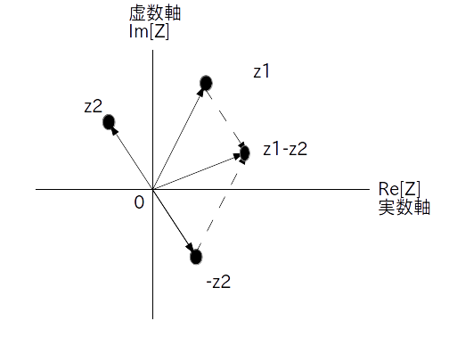

複素数と複素数の足し算は直交形式で考えると楽です。
直交形式を使って実数、虚数成分別に足し合わせる。つまり
\[ z_1 = a + j \cdot b \]かつ
\[ z_2 = c + j \cdot d \]の時
\[ z_1 + z_2 = (a + c) + j \cdot (b + d) \]実際には複素数どうしの足し算は複素平面上のベクトルの足し算になります(図1)。
掛け算は極形式で考えたほうが楽です。
極形式を使ってネイピア数 e の掛け算をおこなう。つまり
\[ z_1 = |z_1| \cdot \textrm{e}^{\{j\cdot \angle \ z_1\}} \]かつ
\[ z_2 = |z_2| \cdot \textrm{e}^{\{j\cdot \angle \ z_2\}} \]の時
\[ z_1 \cdot z_2 = (|z_1|\cdot|z_2|) \cdot \textrm{e}^{\{j\cdot (\angle \ z_1 + \angle \ z_2)\}} \]この様に、掛け算では絶対値どうしは掛ける、偏角どうしは足すという演算手順になります。
引き算の話をする前に、掛け算の特殊な場合である回転について話します。
$\theta$ を任意の角度(rad: ラジアン)とする。ある複素数 $z$ に
\[ \textrm{e}^{\{j\cdot \theta\}} \]を掛けることは、原点を中心として$z$ を $\theta$ [rad] だけ反時計回りに回転させることに相当する。つまり
\[ z \cdot \textrm{e}^{\{j\cdot \theta\}} = |z| \cdot \textrm{e}^{\{j\cdot (\angle \ z+\theta)\}} \]回転は図で考えた方が分かりやすいでしょう。図2を見れば元の複素数が回転して移動していることが一目瞭然です。

なお、$\theta$ がマイナスの時は時計回りに回転します。
さらに回転の特別の場合として複素数に $-1$ を掛けた時の話をします。
ある複素数に -1 をかけるという行為は、その複素数を直交形式で考えているのか、極形式で考えているのかによって意味が変わってきます。まず直交形式の場合ですが至極当たり前の話になります。
実数成分と虚数成分の符号を変える。つまり
\[ z = a + j \cdot b \]の時
\[ -z = (-a) + j \cdot (-b) \]一方、極形式で考えた場合は $-1 = \textrm{e}^{j\pi}$ ですので、元の複素数 $z$ を 180 度回転させることを意味しています。
$\pi$ [rad] 回転させる。つまり
\[ z = |z| \cdot \textrm{e}^{\{j\cdot \angle \ z\}} \]の時
\[ -z = z \cdot (-1) = |z| \cdot \textrm{e}^{\{j\cdot \angle \ z\}} \cdot \textrm{e}^{j\pi} = |z| \cdot \textrm{e}^{\{j\cdot (\angle \ z + \pi)\}} \]なお、直交形式で考えようが、極形式で考えようが、複素数に -1 を掛けるという行為は複素平面上ではベクトルの向きが逆になることを意味します(図3)。

極形式で考えている時に実数 $a$ を $z$ にかける場合は $a$ の符号に気を付けて下さい。
もし $a>0$ ならそのまま
\[ a\cdot z = (a \cdot |z|) \cdot \textrm{e}^{\{j\cdot \angle \ z\}} \]で結構です。
一方、$a < 0$ なら (4) で説明したようにベクトルの向きが逆になりますので
\[ a \cdot z = |a|\cdot(-1)\cdot z = ( |a| \cdot |z| )\cdot \textrm{e}^{\{j\cdot (\angle \ z + \pi)\}} \]となります。
次に引き算の話をします。引き算は足し算と同様に直交形式で考えると楽です。
直交形式を使って実数、虚数成分別に引く。つまり
\[ z_1 = a + j \cdot b \]かつ
\[ z_2 = c + j \cdot d \]の時
\[ z_1 - z_2 = (a - c) + j \cdot (b - d) \]
なおベクトル的には $z_1$ から $z_2$ を引くという行為は、$z_1$ に $z_2$ を 180 度回転させた $-z_2$ を足すことを意味します。
図4が引き算 $z_1 - z_2$ をベクトルで表した図になります。

最後に割り算について話します。割り算は掛け算と同様に極形式で考えると楽です。
極形式を使ってネイピア数 e の割り算をおこなう。つまり
\[ z_1 = |z_1| \cdot \textrm{e}^{\{j\cdot \angle \ z_1\}} \]かつ
\[ z_2 = |z_2| \cdot \textrm{e}^{\{j\cdot \angle \ z_2\}} \]の時
\[ \frac{1}{z_2} = \frac{1}{|z_2|} \cdot \textrm{e}^{\{-j\cdot \angle \ z_2\}} \]なので
\[ \frac{z_1}{z_2} = \frac{|z_1|}{|z_2|} \cdot \textrm{e}^{\{j\cdot (\angle \ z_1 - \angle \ z_2)\}} \]要するに割り算は絶対値どうしは割る、偏角どうしは引くという演算手順になります。